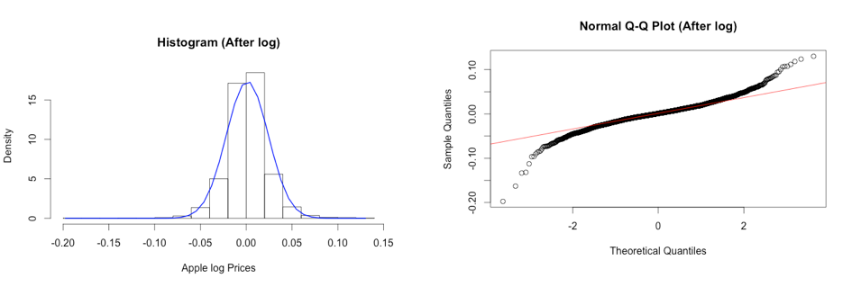
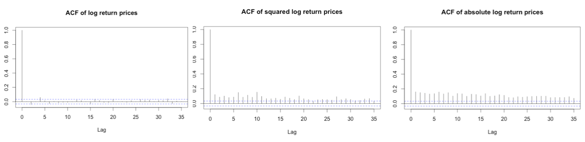
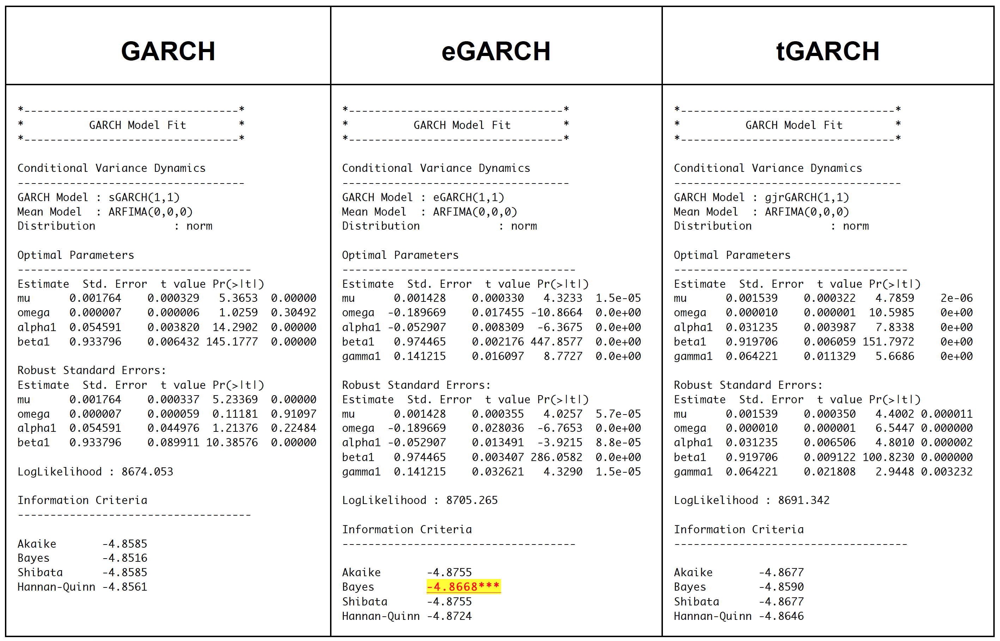
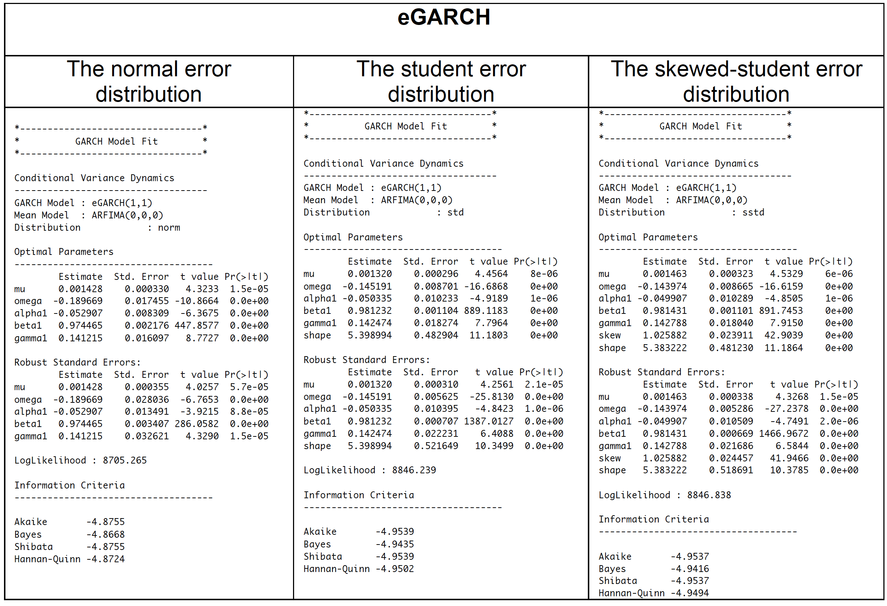
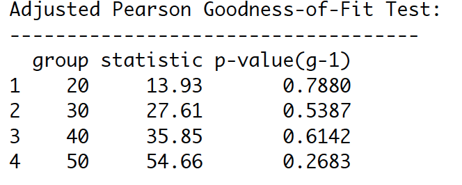

Chicago-Based Data Enthusiast with 2+ years of Data Science and Machine Learning including 1 year of Healhcare Analytics experiences. With strong analytical and technical skills, able to solve problems with creative solutions and producing effective data-driven strategies. A quick learner who can absorb new ideas and can communicate clearly and effectively. Currently looking for full-time employment.


Our group sought to investigate grocery retailers through multiple data visualization techniques from data set called “The Complete Journey” released from the data science firm, dunnhumby. Doing so would help retailers have better understanding of buyer habits and product relationship to improve their marketing strategies. The data set we chose is consisted of 276,484 transactions, 2,500 households’ demographic details, and 92,353 items of products. We divided up into two big aspects of the investigation—marketing and product relationship aspects. I used R and Tableau to create these visualizations

This plot shows what age range spend the most when transactions occur. I present this chart as a bar graph including zero because it will not be exaggerated if I did not include zero. As we can see, the people whose age between 45-54 spend the most among others.

This plot helps us to clearly separate which campaign is the most successful (represented by area of squares) divided by age range (presented by different color). Campaign number 18 is the most successful in people with the age of 45-54, 25-34, 55-64 and 65+, and campaign number 13 for 35-44 and 19-24.

This plot reveals customers in which age range redeem the most coupons divided by campaign (Y-axis). The width of violin plot represents number of coupon redemption. We can obviously see Campaign number 18 is a big hit across all customers’ age range except 35-44 and 19-24 (can be clearly distinguished in graph 4). People with the age between 45-54 redeem most coupon across all customers, and 19-24 use least coupon.

This plot reveals the distribution of sale values summary by different age range. Having changed from normal scale to logarithmic scale for sale values summary helps the data exhibit itself better rather clumping on the X-axis. Overlaying box/whisker plots on violin plot also helps us to see which group of customers tend to spend the most. From the normal scale plot (left), the box/whiskers plots also help us detect the outliners that may affect analysis result.

This graph reveals the relationship between different products being randomly chosen linked together by lines. Line width show how much they are correlated to one another. The thicker line, the more highly correlated of products are. For example, from the thickness alone, we can see people who have baby are more likely to buy film/camera products, and beer rather than vitamins. The coffee and fitness & diet products are not correlated at all.
Having explored and analyzed the data through different visualization techniques, I found the different patterns in coupon redemption, how much different ages customers spend, the most successful campaign and product relationship. Those patterns potentially help retailers have better understanding their customers in order to make the decision for store improvement and gain more profit. Looking at the data alone does not help a non-technical person have an idea what is going on, yet after the proper visualization techniques been applied, the insights/patterns hidden in the data are revealed with easily understandable. The data visualization definitely facilitates the data analysis and decision-making processes.
Improving the classification algorithm performance can be done in many different ways, but the most popular approaches are to use bagging and boosting with different weak learners. In this project, we use the Lung nodules data set generated from 2D lung nodule images and extracted into content-based features. The data consists of 810 instances with 65 useful feature attributes with four likelihood of malignancy ratings given by four different radiologists. We also use three different data preprocessing approaches (binning, balancing and feature extraction (PCA)) and fit six different classifiers in each preprocessed data set. We then compare all classifiers in order to make assumption whether bagging or boosting is outperformed to one another.

Our data set consists of 5 malignancy ratings (1, 2, 3, 4 and 5) given by 4 different radiologists, we then decide to bin the classes by grouping them into 2 classes -class 1, 2, 3 and class 4 and 5 as inconclusive and likely suspicious of malignancy respectively. In order to do so, we have to average all ratings given by 4 different radiologists, and round it up to get the single rating values.

Having binned the class variables into two classes, we can obviously see the data become imbalanced with inconclusive and likely class, 682 and 128 respectively. Minorities would be ignored from the model prediction. We resolved this issue by applying SMOTE function in DMwR library on raw data. With this function, it is said by Torgo, L. (2010) to artificially generate new examples from the minority class using the nearest neighbors of these cases, and majority class examples are also under-sampled, leading to a more balanced dataset.

Principle Component Analysis (PCA) is the feature extraction technique that can reduce the dimension space of the data set. This data set has many attributes (more than 60 attributes). After applying PCA, the first feature we extract from the attribute space captures the most variability in the data.

Even though the scree plot suggests that the first four components to capture the most variance (66.89%) in the data, the variance still does not meet our expectation (at least 95%). In order to do so, we then decide to use 22 components to capture at least 95 percent of the variances in the data.
Once all our data preprocessed, we get three sets of data– unbalanced raw, balanced and feature extracted (PCA) data set. We then fit Boosted Tree, Stochastic Gradient Boosting (GBM), Boosted Logistic Regression, Random Forest (extension of bagging), Bagged CART(Bagged Tree) and Bagged LDA models on each data set.
In order to find the best model of each ensemble classifier, we use Grid Search function, which will try multiple combinations of parameters available in that ensemble classifier. We then choose the best model of each model based on the area under the ROC curve.
Furthermore, we decide to use 10-fold cross validation this data set is small. Another important reason that we use 10-fold cross validation because we would like to prevent the model overfitting to the training data.
This plot just shows an example of how the models performed with different parameters only on the balanced data set (the unbalanced data and the feature extraction(PCA) included in appendix). Grid Search has been performed to find the best parameters for each model. For Random Forest, number of randomly selected predictors(mtry) have been used to find the optimal model. The results revealed that when the number of mtry increases, the AUROC decrease. This might indicate that the RF model started getting overfitted.
For boosted Tree and GBM, tree depths and number of trees were parameters used to adjust the tree.After trying many combination, the result revealed that AUROC increases when the number of trees increases. More details about results are included in appendix.
Having fitted all models on each data set, we can see the the Random Forest has the best overall performance, even though the Boosted tree perform better in only imbalanced data. The second best model so far is Bagged Cart (Bagged Tree) model on both balanced and PCA data set, and Random Forest for the unbalanced data.
Across different preprocessing approaches, we can see the feature extraction (PCA) improve prediction performance on some models, and the rest are about the same as the result in balanced data. Therefore, it would better to use PCA approach to reduce over 60 features into 22 features to capture 95% of the variance in the data. The less features are in the models, the faster algorithm run. Since we use 10-folds cross validation with 10 iteration technique, it makes all of our ensemble models run really slow. We also see that the more complexity model is, the longer the algorithm run.
Based on this data set, we can conclude for these findings that Bagging is more outperformed than Boosting techniques on binary class variables, but Boosting might perform best on unbalanced data. Even though Kristína Machová found Boosting has higher performance in her work, it makes sense to us that we found Bagging has higher performance on this certain data because cross validation is used in experiment making our samples become small which fit very well in Bagging models. Within boosting technique, boosted tree perform the best across all different data. For the bagging, Random Forest perform the best among other bagging techniques (Bagged Tree and Bagged LDA).
For future work, we would use the multiple rating given by four different radiologists rather than binning them into binary class. The hybrid ensemble model could be fitted to multi-class label better than the single ensemble classifier. The elements of the hybrid ensemble model can be picked from this experiment, as well as we could combine both bagging and boosting altogether. Additionally, this data set is small. The model results would be better; we can collect more data for the minority class.

The purpose of this data analysis is to perform an exploratory analysis and develop time series model of Apple stock prices. We would like to provide the best model that can be used to precisely forecast the upcoming Apple stock price. As we have known, Apple is the number one company in the consumer electronics market. After 2001, the year that the company reinvented itself with the introduction of iPod, Apple stock has soared more than 100 percent to the most recent period. Today, AAPL’s price is around 102 per share.
However, the price fluctuation has occurred due to the market’s uncertainty and company’s movement. For example, Apple introduced the fourth version of its iPhone in 2010. After the press, Apple's stock fell about or 2 percent, to $250.94. On the same day, the Dow Jones industrial average and the Standard & Poor's 500 index both plunge to their lowest level of the year because of concerns about Europe's economic problems. In 2013, AAPL’s price changed dramatically in a short period of time. It fell sown about 26% and then gained more than 40%. It is also obvious that the variance of the AAPL’s price is not constant over time. To capture this sort of situation, we have decided to apply the time series model that has the effect of shock persistent to the return movement and the volatility affected by negative shocks.
We finally forecasted the AAPL’S price after March 8th, 2016 based on our suggested model. The forecast shows the higher prices and seems to have an upward trend following. We also did the model validation and compared our result with the actual AAPL’s price after March 8th, 2016. It turned out that our prediction is very close, indicating the appropriated model in the analysis. Therefore, we believe our suggested model is useful to analyze the future APPL’s price. However, analyst should carefully utilize not only with the model, but with the experience and the real-time market’s price.
The time plot of Apple daily stock prices in dollars, starting in January 2002 to March 2016, shows the growth began to slow soon after 2008. Although MacBook Air was first introduced in January 2008, a collapse had occurred until the growth recovered in the middle of 2009; when the new iPhone3GS was launched. The growth continued with the upward trend and reached to the peak in the second half of 2012. Following the peak, the stock prices changed dramatically since. The prices had decreased in 2013 and then rebounded to the upward trend in the same year. There was a huge spike in 2015, the highest in the history.
We applied log transformation to the dataset since there is evidence that our data with the time series is nonstationary, and it has a non-linear growing trend.
After applying log transformation, the histogram shows the symmetric of the distribution with the longer left tails (skewness = -0.179). Moreover, it shows that the distribution has large Kurtosis (Kurtosis = 5.129), demonstrating the fat tails, and mean zero. The Normal Probability plots show the skewness on both tails. Moreover, we test the hypothesis of normality for the distribution using the Jarque-Bera test at 5% level. Since P-value < 2.2e-16, we can reject null hypothesis and conclude that the data does not come from normal distribution at 5% significance level.
Time plots show returns varying around the zero line with an extremely large log return around 2002 (-0.15), 2008 (-0.20), and 2013 (-0.15) followed by a high volatility period. Conditional volatility is non-constant over time with periods of high volatility in in 2008-2010 during the European’s economic crisis, and when many technology stocks plunge on concerns about a slowdown in consumer spending. Negative shocks have an effect on the process volatility, where high volatility does not decrease quickly.
The ACF plots show that Apple stock log returns are not correlated – indicating a constant mean model for rt. Both the squared returns time series and the absolute returns time series show large autocorrelations. We can conclude that the log returns process has a strong non-linear dependence. We also know that time series shows an ARCH effect when squared or absolute values of time series are serially correlated. Moreover, the LB tests on squared returns and absolute returns confirm that both are auto correlated (p-values<0.05, we can reject H0 of no correlation).
Having done exploratory analysis, our apple stock log return does not show to be serial correlated and the normality in the data. The plots of log returns also show the non-constant volatility in data. It makes sense to apply GARCH model to capture conditional volatility.
We then start fitting three different types of model-GARCH, eGARCH and tGARCH with normally distribution error. BIC is also used to help us determine which model type turn out to be the best fit. Once model type is found, we then tune the model with different error distribution (Normal distribution, student distribution and Skewed- student distribution).
eGARCH model turns out to be the best type for this data. We therefore tweak parameter with two more different error distribution methods- student and skewed-student distribution. It totally makes sense that eGARCH and tGARCH fit better than GARCH on this data because eGARCH and tGARCH allow us to capture asymmetric between positive and negative effects on the asset, which GARCH does not.
Having fitted the eGARCH model with three different error distributions and obtained BIC, the model with student distribution turns out to be the best model for Apple stock return from 2002-2016. In order to accept the eGARCH with student error distribution, we have to check the adequacy of the model.
The best fitted model rt = 0.001320+ at, at=σtet, ln(σ2t) = -0.145191 + (-0.050335 et-1 + 0.0.981232(|et-1| - E(|et-1|)) + 0.142474 ln(σ2t-1) with t-distribution with 5 degrees of freedom. With significant P-value of alpha1, we can then conclude that there is the leverage effect significant at the 5% level. Since the alpha 1 is less than zero, the volatility is more likely to react to negative shocks. The large beta value indicates the effect of a shock is strong persistence.
If model is adequate, residuals should be white noise and squared residuals should be white noise (no ARCH effect).
P-values are larger than 0.05. Therefore, we cannot reject the hypothesis of independence for the residuals, and conclude that residual series behave as a white noise process. There is no evidence of autocorrelation in residuals.
Ljung-Box test for ARCH/GARCH effect computed on squared residuals. P-values are larger than 0.05. Therefore, we conclude that there is no evidence of serial correlation in squared residuals.
Shape parameter in Robust Standard Errors is significant (p-value = 0.0e+00), indicating that the t- distribution is a good choice. Also, from Adjusted Pearson Goodness-of-Fit Test, p-values are larger than 0.05. It means that t-distribution assumption cannot be rejected. This supports the choice of the t-distribution
Also, t-distribution probability plots for residuals show that t-distribution is appropriate. Some departure is seen above and under the left tail for extreme residuals.
Moreover, the series with 2 conditional SD superimposed plots show that our model seems to capture most of the extreme shock. However, it is not likely to capture some extreme shocks.
Having done 5-step forecast, the apple stock price is more likely to go up after March 7th, 2016 (our last date of the dataset). With 1000-out-of-sample rolling forecast, the yellow shade shows the area that our model can capture the actual movement represented by blue line. As shown the yellow shade, our model can capture most of the volatility of the Apple stock return.
Since all residuals of the eGARCH with t-distributed error have no sign of autocorrelation and serial correlation, we conclude eGARCH model with t-distributed error becomes our best adequately fitted model for the Apple stock price log return. It has the effect of shock persistent to the return movement and the volatility affected by negative shocks. Moreover, we can see that our model can still capture the asymmetric volatility behavior of Apple log return price from the 1000-out-of-sample one-step ahead rolling forecast in a previous section.
However, Apple stock fluctuations in stock prices are irrational sometimes. We have seen their prices go up and down more than a rollercoaster at times. Therefore, we should investigate the actual environment and circumstances. In a meantime, we thoroughly analyze and forecast of stock price by utilizing the suggested model.
With in the airline on-time data set, it has multiple zip files divided by years from 1988 to 2008. After all files unzipped, the data has different small CSV files that have to be merged together before moving forward. I got big CSV files with the size of 35 Gigabytes after unzipped. My next step is to implement Map functions in Python and apply/debug on the real data until they work properly before being used in Hadoop environment.
• Numbers of flight cancelations
• Numbers of operational flight through out the years
• Numbers of cancelations divided by months at O’Hare airport
• Numbers of cancelations divided by years at O’Hare airport
• Numbers of flight delay departure at O’Hare airport by years
We can now create MapReduce funtions using Python.
At this point, I decided to debug the code by using the following command to see whether my Python codes are applicable before using them in Hadoop. I use this line of code below to debug the codes
The codes seem run pretty well, but there were some outputs did not return proper values. To narrow down this problem, I decided to check whether each line has the same numbers of columns. It turned out some years do not have the same columns. Thus, I checked the data year by year and picked some years before merging them together instead of using the whole period—1988 to 2008. In 2004, 2005 and 2006, the data have the same numbers/types of columns, I then merge these three years altogether with the size around 6.8GB (which is possibly big enough for Hadoop processing). The final data has 54 columns and 21,411,788 rows and it is ready to run on Hadoop clusters.
With this data set, Hive and Python MapReduce functions run about the same. The advantages of using Hive is handy and easier for people who have SQL background, as well as who are not hard coders. Hive will automatically transform your SQL-like entries to MapReduce functions. Unlike Hive, customized Python MapReduce functions require more coding skills, but it can be customized however we want. I also believe the customized codes can still be maximized the performance more if we know how to change the configurations and faster algorithms. All in all, I personally prefer using Hive as for a handy reason that I just fire SQL queries into system and wait the results.
I use Hive open server service, and link it to Tableau to reduce a bottle neck when create data visualizations. Having created connection between Hive and Tableau, let's test the performance. The data I used in this solution have different tables with 2,595,732 observations. I have joined all tables and created multiple plot through this solution. It was really faster than running on my local machine.